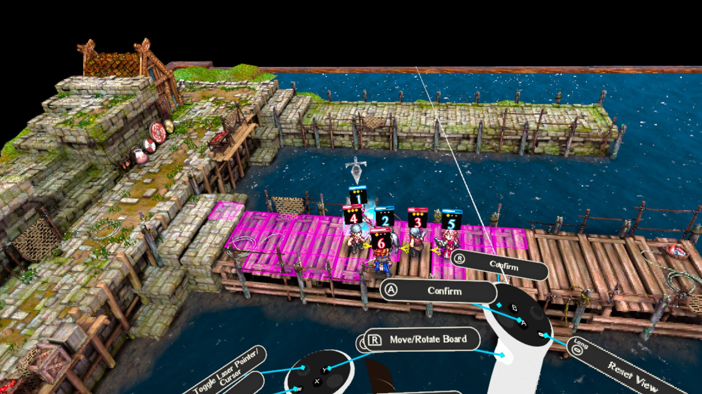
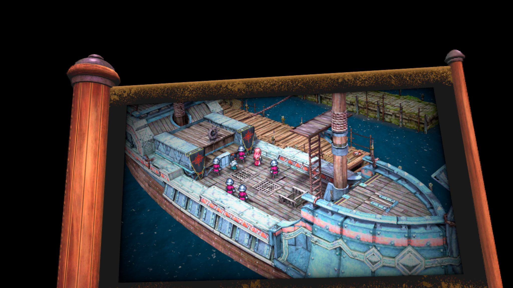
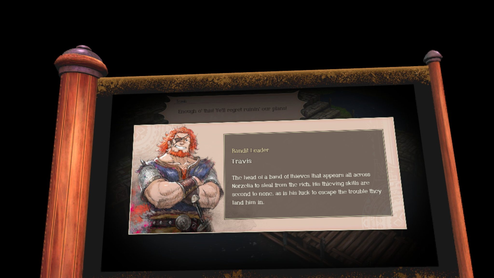
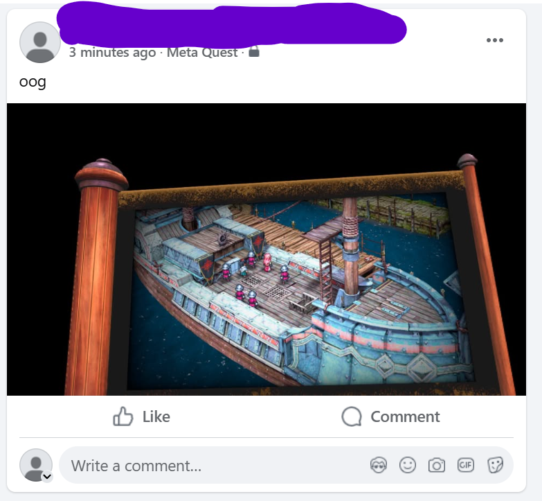

It was okay. I dunno about the game itself — I played for just an hour! — but boy howdy, is it... a port.

What the good stuff looks like.
The controls are very clunky, and while I'll get used to them with time, it's... gonna take some time. Moving characters is the least intuitive thing, which isn't good, and is actually quite bad, because you gotta move 'em all the time. The game defaults to pointer mode if you have your left thumb resting on the left stick, and you have to have it resting on the buttons to actually comfortably use the "pick up guys" mode. And "pick up guys" mode has a bit of a delay, and is weird in 3d space, and doesn't work quite right. And then all the menuing is centred on the left controller, and it's kind of small, and probably slanted, and blurry. And boy howdy, the game sure is blurry! It's definitely made for the Quest 3 rather than the Quest 2. Whatever the case, yeesh.


What everything that isn't combat looks like. And the guy on the right, veritable awooga.
Most of the game is just "2D Triangle Strategy playing on a menu in front of you", which is weird and not good. And, minor annoyance, but the Meta Horizon mobile app is very annoying and doesn't work right, so the only way for me to export photos of the game is to upload them to facebook from within my headset. Yowch, Facebook.

My Facebook feed now.
Might put some more time into it. Might not. I was playing modded Minecraft with Dema, Dan, Liz, SolarMoth, Soba, Dany, and a few others, and two days ago completely royally fucked that up by getting extremely mad at Liz and ruining the end raid in a massive way. So I feel like shit, though I definitely made other people feel worse. And it was such a public thing! Totally fucked myself irreparably. I didn't have a hold on my anger issues, even for hours afterwards, and, fuck. I guess I'm trying to retreat to solo passions and pleasures. Video game not going good, not at all, I'm in a creative rut entirely (if you couldn't tell from the lack of blog posts). College is going alright.